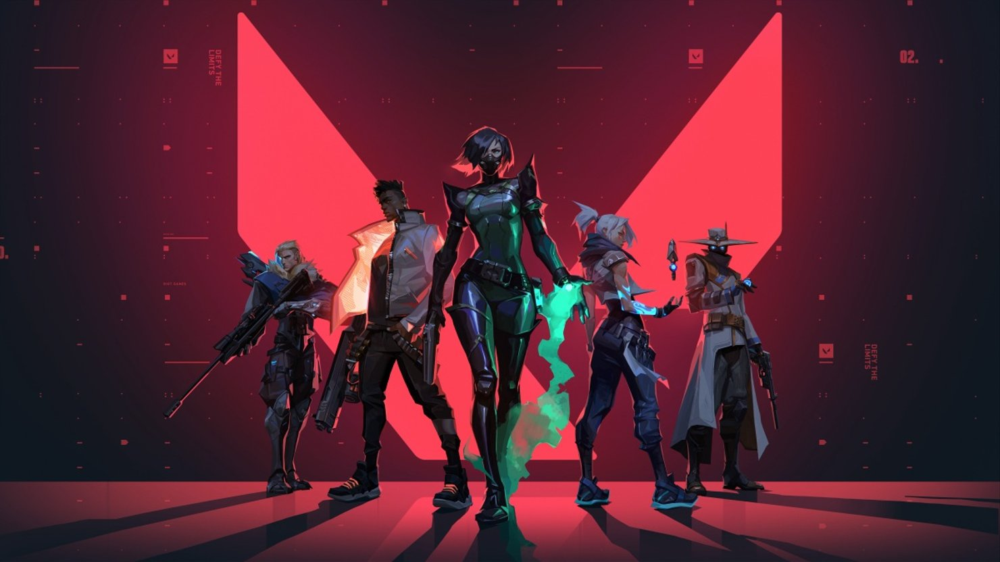

VALORANT: Permainan Taktis Multipemain Gratis
Dipublikasikan Pada 13 Oktober 2024
Menyelami dunia taktis VALORANT yang penuh strategi dan kerja sama tim.
VALORANT adalah permainan video POP (penembak orang pertama) taktis multipemain gratis yang dikembangkan dan diterbitkan oleh Riot Games, untuk Microsoft Windows. Pertama kali menggoda dengan nama kode Project A pada Oktober 2019, permainan memulai periode beta tertutup dengan akses terbatas pada 7 April 2020, diikuti dengan perilisan resmi pada 2 Juni 2020. Pengembangan permainan dimulai pada 2014.
Alur Permainan
VALORANT adalah penembak taktis berbasis tim dan penembak orang pertama yang diatur dalam dekat masa depan. Pemain bermain sebagai salah satu dari sekumpulan agen, karakter yang dirancang berdasarkan beberapa negara dan budaya di seluruh dunia. Dalam mode permainan utama, pemain ditugaskan ke tim menyerang atau bertahan dengan masing-masing tim memiliki lima pemain di dalamnya. Agen memiliki kemampuan unik, masing-masing membutuhkan biaya, serta kemampuan akhir unik yang membutuhkan pengisian melalui pembunuhan, kematian, atau aksi spike. Setiap pemain memulai setiap putaran dengan pistol "classic" dan satu atau lebih muatan "kemampuan khas". Senjata dan biaya kemampuan lainnya dapat dibeli menggunakan sistem ekonomi dalam permainan yang memberikan uang berdasarkan hasil putaran sebelumnya, pembunuhan apa pun yang menjadi tanggung jawab pemain, dan tindakan apa pun yang diambil dengan spike. Saat ini, menawarkan 21 agen untuk dipilih, termasuk Brimstone, Phoenix, Sage, Harbor, Sova, Gekko, Viper, Cypher, Reyna, Killjoy, Fade, Neon, Breach, Omen, Jett, Raze, Skye, Yoru, Astra, KAY/O, dan Chamber.
Mode Permainan
Unrated
Dalam mode standar Unrated, pertandingan dimainkan dari 25 putaran - tim pertama yang memenangkan 13 putaran memenangkan pertandingan. Tim penyerang memiliki perangkat tipe bom yang disebut Spike. Mereka harus mengirimkan dan mengaktifkan Spike di salah satu dari beberapa lokasi yang ditentukan. Jika tim penyerang berhasil melindungi Spike yang diaktifkan selama 45 detik, Spike akan meledak dan mereka menerima poin. Jika tim bertahan mampu menonaktifkan spike, tim bertahan menerima satu poin.
Spike Rush
Dalam mode Spike Rush, pertandingannya dimainkan sebanyak 7 ronde - tim pertama yang memenangkan 4 putaran memenangkan pertandingan. Pemain memulai putaran dengan semua kemampuan terisi penuh kecuali yang pamungkas, yang mengisi daya dua kali lebih cepat dari permainan standar. Senjata diacak di setiap putaran dan setiap pemain memulai dengan senjata yang sama.
Kompetitif
Pertandingan kompetitif sama dengan pertandingan unrated dengan tambahan sistem peringkat berbasis kemenangan yang memberikan peringkat ke setiap pemain setelah 5 pertandingan dimainkan. Sebelum Anda dapat bermain dalam permainan kompetitif, Anda harus memenangkan 10 pertandingan unrated terlebih dahulu. Pada Juli 2020, Riot memperkenalkan syarat "win by two" untuk pertandingan kompetitif, di mana alih-alih memainkan satu putaran sudden death di 12-12, tim akan bergantian memainkan putaran serangan dan pertahanan dalam perpanjangan waktu.
Deathmatch
Mode Deathmatch diperkenalkan pada 5 Agustus 2020. 14 pemain mengikuti pertandingan free-for-all selama 10 menit dan orang pertama yang mencapai 40 pembunuhan atau pemain yang paling banyak membunuh ketika waktunya habis memenangkan pertandingan.
Escalation
Mode permainan Escalation diperkenalkan pada Februari 2021 dan mirip dengan konsep "gungame" yang ditemukan di Counter-Strike dan Call of Duty: Black Ops, meskipun berbasis tim daripada free-for-all.
Agen
Ada berbagai macam agen yang dapat dimainkan yang tersedia di dalam permainan. Agen dibagi menjadi 4 peran: Duelist, Sentinel, Initiator, dan Controller. Setiap agen memiliki peran yang berbeda yang menunjukkan bagaimana agen biasanya dimainkan.
Duelist
Duelists adalah garis ofensif, yang mengkhususkan diri dalam menyerang dan entry fragging untuk tim.
Sentinel
Sentinels adalah garis pertahanan, yang mengkhususkan diri dalam menjaga situs dan melindungi rekan tim dari musuh.
Initiator
Initiators merencanakan dorongan ofensif. Inisiator berspesialisasi dalam menerobos posisi musuh yang bertahan.
Controller
Controllers mengkhususkan diri dalam menyiapkan tim mereka untuk sukses. Mereka menggunakan utilitas berat mereka untuk mengontrol garis pandang di peta.
Perilisan
VALORANT diungkap dengan judul tentatif Project A pada Oktober 2019. Itu diumumkan pada 1 Maret 2020, dengan video alur permainan di YouTube disebut "The Round". Beta tertutup dari permainan ini diluncurkan pada 7 April 2020. Beta ini berakhir pada 28 Mei 2020, dengan permainan ini dirilis sepenuhnya pada 2 Juni 2020.
Sumber: Wikipedia